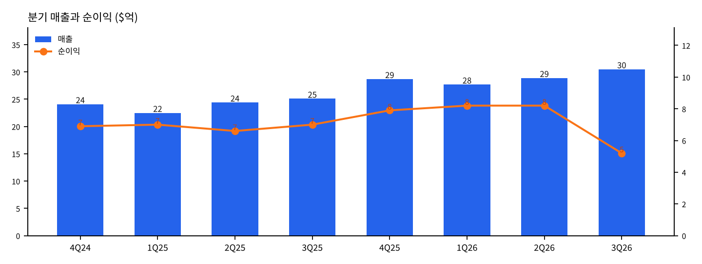
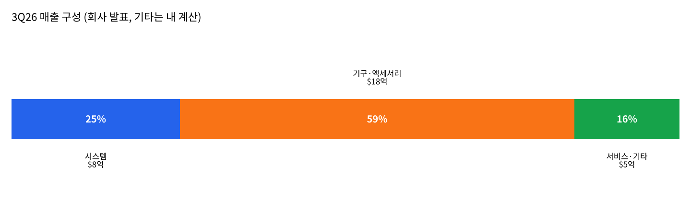
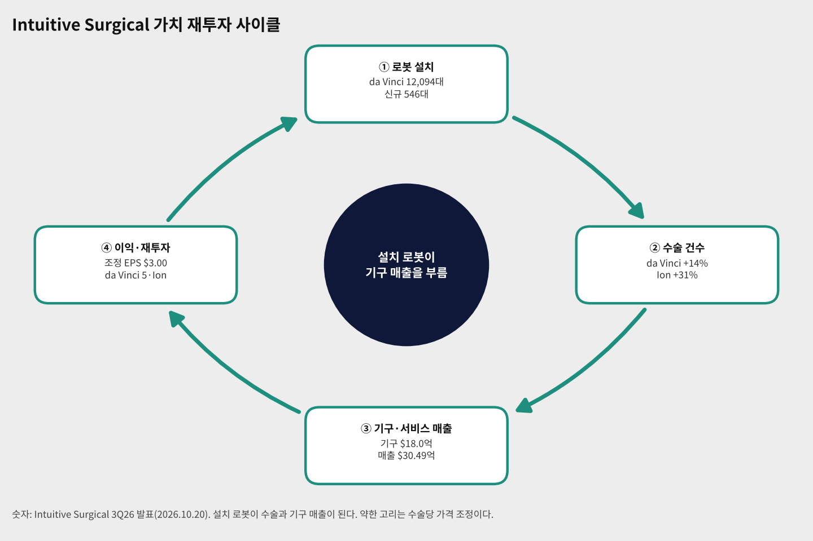

Intuitive는 수술 로봇을 병원에 판매·임대하고, 수술마다 쓰는 기구와 서비스로 계속 돈을 번다. 설치된 로봇이 많을수록 반복 매출이 커진다.
| 항목 | 내용 |
|---|---|
| 종목 | Intuitive Surgical (ISRG) · NASDAQ · 헬스케어(의료기기) · 캘리포니아 서니베일 |
| 최근 분기(3Q26) | 매출 $30.49억, 조정 EPS $3.00 |
| 핵심 제품 | da Vinci, Ion |
| 직원 수 | 약 17,000명(트레이딩뷰) |
| 멀티플 | PER·PEG·P/S는 08~10 항목 표 참조 |
| 직책 | 인물 | 역할·특징 |
|---|---|---|
| CEO | 데이비드 로사(David Rosa) | CEO |
| CFO | (확인 필요) | 회사 공개 자료 기준 확인 필요 |
경영 스타일: 설치 기반 확대. 로봇을 깔아 두고 수술마다 쓰이는 기구에서 매출을 만든다.
신형 da Vinci 5가 3Q 신규 설치 546대 중 315대를 차지했다.
Ion 설치가 1,152대로 늘고 수술 +31%를 기록했다.
다음 실적발표는 세 가지 질문에 답하는 자리다.
1. 수술 건수 성장이 14~15%를 지키나?
2. 가격 조정이 수술당 매출에 얼마나 영향을 주나?
3. 독점금지 합의 이후 추가 부담이 있나?
한 줄 판정 규칙: 첫 질문(수술 건수)이 유지되면 약한 고리(수술당 매출 감소)가 가려진다.
일정: 4Q26 실적은 2027.01.26 발표 예정이다. FY27 가이던스도 이때 나올 수 있다(확인 필요).
| 분기 | 매출 | 순이익 | EPS | 조정 EPS | 특이 사항 |
|---|---|---|---|---|---|
| 4Q24 | $24.1억 | $6.9억 | 1.88 | 2.21 | |
| 1Q25 | $22.5억 | $7.0억 | 1.92 | 1.81 | |
| 2Q25 | $24.4억 | $6.6억 | 1.81 | 2.19 | |
| 3Q25 | $25.1억 | $7.0억 | 1.95 | 2.40 | |
| 4Q25 | $28.7억 | $7.9억 | 2.21 | 2.53 | |
| 1Q26 | $27.7억 | $8.2억 | 2.28 | 2.50 | |
| 2Q26 | $28.9억 | $8.2억 | 2.29 | 2.80 | |
| 3Q26 | $30.5억 | $5.2억 | 1.49 | 3.00 | GAAP EPS에 독점금지 합의비용 $4.5억 포함 |
매출은 트레이딩뷰 스캐너의 분기 총매출이라 회사가 발표한 순매출과 다를 수 있다. 3Q26 GAAP EPS $1.49에는 독점금지 합의비용 $4.5억(주당 $0.99)이 들어 있다. 매출·순이익·EPS(GAAP 희석)는 트레이딩뷰 스캐너, 조정 EPS는 트레이딩뷰 실적 페이지의 Reported 값이다. 분기 정렬은 오래된 분기→최신이다.

흐름 요약: 최근 분기 매출은 $30.5억로 전년 동기 $25.1억 대비 +21.5%, 순이익은 $5.2억(전년 $7.0억)다. 최근 4분기 GAAP EPS는 $8.27, 조정 EPS는 $10.83다.
| 항목 | 내용 | 3Q26 금액 | 비고 |
|---|---|---|---|
| 시스템 | da Vinci·Ion 판매/임대 | $7.69억 | |
| 기구·액세서리 | 수술마다 소모 | $18.0억 | +18% |
| 그 외(내 계산) | 서비스 등 | $4.80억 | 총 $30.49억에서 위 항목을 뺀 값 |

기구·액세서리가 절반 이상을 차지한다. 설치된 로봇이 늘수록 이 반복 매출이 늘어난다.
Intuitive는 최소침습 수술을 늘려 환자의 회복을 돕는 것을 목표로 한다.
| 축 | 내용 |
|---|---|
| 설치 기반 | da Vinci 12,094대 |
| 수술 | da Vinci 수술 +14% |
| 현금 | 현금·투자 $68억 |

| 이동평균 | 값 | 종가 대비 | 위치 |
|---|---|---|---|
| 5일선 | $434.54 | -3.1% | 종가 아래 |
| 20일선 | $446.62 | -5.7% | 종가 아래 |
| 50일선 | $421.98 | -0.2% | 종가 아래 |
| 100일선 | $400.42 | +5.1% | 종가 위 |
| 200일선 | $428.43 | -1.7% | 종가 아래 |
52주 고가 $603.88(2026-01-07)·저가 $328.57(2026-07-23) 범위에서 종가 $420.95는 100일선을 웃돌고 5일선, 20일선, 50일선, 200일선은 밑돈다.
| 규칙 | 기준 | 현재 값 | 신호 |
|---|---|---|---|
| 장기 추세 필터 | 종가 vs 200일선 | $420.95 < $428.43 | 매도 |
| 중장기 교차 | 50일선 vs 200일선 | $421.98 < $428.43 | 매도 |
| 단기 교차 | 20일선 vs 50일선 | $446.62 > $421.98 | 매수 |
| 돈키언 채널 | 55일 고가 $485.85 / 저가 $345.25 | 중간값 $415.55 위 | 매수 |
| 1개월 모멘텀 | 21거래일 수익률 | -3.9% (기준 $438.00) | 매도 |
| 3개월 모멘텀 | 63거래일 수익률 | +12.4% (기준 $374.48) | 매수 |
| 6개월 모멘텀 | 126거래일 수익률 | -6.3% (기준 $449.03) | 매도 |
| 12개월 모멘텀 | 252거래일 수익률 | -23.0% (기준 $546.71) | 매도 |
| 종합 (8개 평균) | -0.25 | 매도 |
해석: 매수 신호 3개(단기 교차, 돈키언 채널, 3개월 모멘텀), 매도 신호 5개(장기 추세 필터, 중장기 교차, 1개월 모멘텀, 6개월 모멘텀, 12개월 모멘텀). CTA 점수 -0.25(매도). 14일 ATR $16.30 (3.9%), 52주 고가 $603.88 · 저가 $328.57.
| 가격 | 기준 | 무엇이 바뀌나 |
|---|---|---|
| $546.71 | 12개월 모멘텀 기준가 | 종가가 이 가격 위면 12개월 신호 매수 |
| $485.85 | 55일 고가 | 돌파 시 채널 상단 갱신 |
| $449.03 | 6개월 모멘텀 기준가 | 종가가 이 가격 위면 6개월 신호 매수 |
| $438.00 | 1개월 모멘텀 기준가 | 종가가 이 가격 위면 1개월 신호 매수 |
| $428.43 | 200일선 | 종가가 이 선 위/아래인지로 장기 추세 신호가 바뀜 |
| $415.55 | 돈키언 중간값 | 55일 채널 중간값 위/아래로 신호가 바뀜 |
| $374.48 | 3개월 모멘텀 기준가 | 종가가 이 가격 위면 3개월 신호 매수 |
| $345.25 | 55일 저가 | 이탈 시 채널 하단 갱신 |
가격 수준은 신호가 바뀌는 기준선일 뿐 진입·청산 가격 제안이 아니다. 20일/50일 교차는 이동평균 자체가 움직여 단일 가격으로 표시하지 않았다. 일봉·주봉은 종가 기준 직접 계산(고저 데이터 미사용)이다.
| 악재 요인 | 내용 | 강도 |
|---|---|---|
| 가격 조정 | 수술당 기구 매출 -3~5% 전망 | 중간 |
| 독점금지 합의 | 합의비용 $4.5억(3Q) | 중간 |
| 높은 성장 기대 | 성장률 기대가 높다(내 해석) | 참고 |
| 티커 | 회사 | PER(TTM) | PEG | P/S | EPS 성장(YoY) |
|---|---|---|---|---|---|
| ISRG | Intuitive Surgical | 38.9배 | 1.51 | 12.60배 | +26% |
| BSX | Boston Scientific | 18.5배 | 0.69 | 2.97배 | +26% |
| SYK | Stryker | 33.9배 | 1.45 | 4.64배 | +23% |
| ABT | Abbott | 38.6배 | – | 3.77배 | -66% |
| EW | Edwards Lifesciences | 61.3배 | – | 9.12배 | -27% |
비교 결론: Intuitive의 PER 38.9배는 Boston Scientific·Stryker·Abbott와 비슷하거나 높고 Edwards Lifesciences보다 낮다. PEG 1.51는 Boston Scientific(0.69)·Stryker(1.45)보다 높다.
현금·부채는 트레이딩뷰 스캐너 값이다. 현금·투자 $68억이 분기에 $18.3억 줄었다(자사주·설비).
| 지표 | 값 | 출처 | 해석 |
|---|---|---|---|
| 현금·단기투자 | $41억 | 트레이딩뷰 스캐너(최근 분기) | |
| 총부채 | $0억 | 트레이딩뷰 스캐너(최근 분기) | |
| 순부채(부채−현금) | $-41억 | 내 계산 | 현금 대비 부채 부담 |
| 잉여현금흐름(TTM) | $36억 | 트레이딩뷰 스캐너 | |
| TTM 매출 | $116억 | 트레이딩뷰 스캐너 |
| 기준 | 매출 | P/S | 비고 |
|---|---|---|---|
| 내 계산(종가 ÷ 최근 4분기 매출 합계) | $115.8억 | 12.60배 | 시총은 정렬용 데이터에서만 사용 |
| 동종(트레이딩뷰) | – | BSX 2.97배 · SYK 4.64배 · ABT 3.77배 · EW 9.12배 | 11.19 |
해석: 부채가 거의 없고 현금이 넉넉하다(내 해석).
EBITDA는 영업활동의 현금 창출력을 보는 지표이고, PEG는 PER을 EPS 성장률로 나눈 값이다. EBITDA·FCF는 트레이딩뷰 TTM 값이다.
| 지표 | 값 | 산출 |
|---|---|---|
| EBITDA(TTM) | $45억 | 트레이딩뷰 스캐너 |
| EBITDA 마진 | 38.8% | EBITDA ÷ TTM 매출(내 계산) |
| FCF 마진 | 31.0% | FCF ÷ TTM 매출(내 계산) |
| PER(GAAP TTM) | 50.9배 | $420.95 ÷ $8.27 |
| PER(조정 TTM) | 38.9배 | $420.95 ÷ $10.83 |
| 방식 | PER | EPS 성장률 | PEG | 판정 |
|---|---|---|---|---|
| 조정 EPS (TTM $10.83) | 38.9배 | +26% ($8.61 → $10.83) | 1.51 | 기준 초과 |
| GAAP EPS (TTM $8.27) | 50.9배 | +9% ($7.56 → $8.27) | 5.42 | 기준 초과 |
판정: 조정 EPS 기준 PEG 1.51 → 1.0 초과 PEG 기준은 1.0 이하 투자 적격, 0.5 이하 적극 매수다. EPS 성장률은 최근 4분기 EPS 합계를 직전 4분기 합계와 비교한 값(내 계산)이고, 일회성 항목이 있으면 조정 EPS 행을 함께 본다.

Intuitive Surgical의 사이클: 설치된 로봇이 수술 건수와 기구 매출을 만들고 그 이익이 신제품·설치에 재투자돼 로봇이 더 깔린다.
| 고리 | 현재 숫자·근거 |
|---|---|
| ① 로봇 설치 | da Vinci 설치 12,094대(+12%) · 3Q 신규 546대 |
| ② 수술 건수 | da Vinci 수술 +14% · Ion +31% |
| ③ 기구·서비스 매출 | 기구·액세서리 $18.0억(+18%) · 매출 $30.49억(+22%) |
| ④ 이익·재투자 | 조정 EPS $3.00 · da Vinci 5가 신규 315대 |
사이클의 특징: 약한 고리는 수술당 기구 매출 감소다(-3~5%). "(내 해석)"은 보고서 수치가 아닌 해석이다.